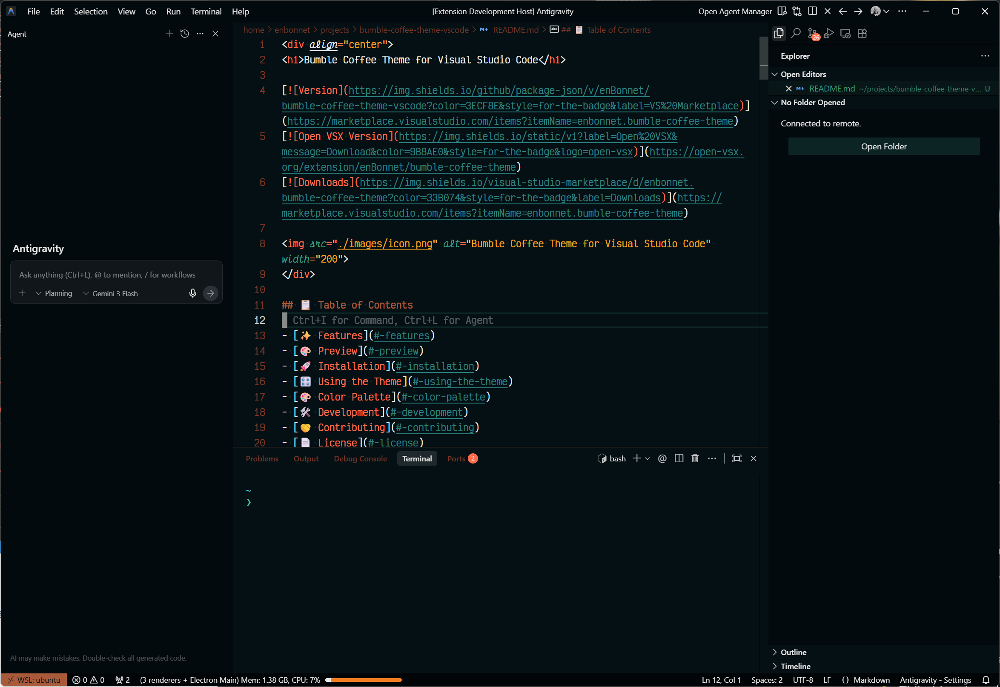

Where Warmth Meets Focus.
A high-contrast VS Code theme inspired by the layered espresso and orange aesthetic of a Bumble Coffee — built for long coding sessions.

Built for the long haul.
Two Variants
Bumble Coffee — rich dark theme with deep espresso backgrounds and vibrant accent colors. Bumble Coffee Light — a softer, warm-toned variant for bright environments.
Semantic Highlighting
Explicit TextMate scoping rules for over 30 languages including JavaScript, TypeScript, Python, Rust, Go, Java, PHP, Ruby, Swift, and GraphQL. See all supported languages →
Eye Comfort
Warm, low-blue-light tones throughout the palette. Carefully balanced contrast ratios keep code readable without harsh glare — the espresso-orange aesthetic is both beautiful and restful.